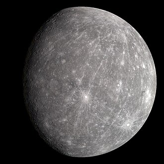

Nesta página há informaçoẽs principais dos planetas presentes em nosso sistema
Este site contém números e dados oficiais da NASA:
Mercúrio

Mercúrio é o menor e o mais rápido planeta do Sistema Solar, localizado a uma distância média de 58 milhões de quilômetros do Sol. Ele não possui luas, tem uma superfície repleta de crateras semelhante à da Lua, e experimenta variações térmicas extremas devido à sua atmosfera rarefeita (exosfera).
Características Principais
--Tamanho e Diâmetro: Possui cerca de 4.879 km de diâmetro equatorial.
--Órbitas e Dias: Um ano dura 88 dias terrestres e um dia completo (rotação) leva 59 dias terrestres.
--Temperatura: Varia de impressionantes 430 °C durante o dia até -180 °C à noite.
--Composição: Formado por cerca de 70% de metal e 30% de silicatos, apresentando um imenso núcleo de ferro que ocupa grande parte do planeta